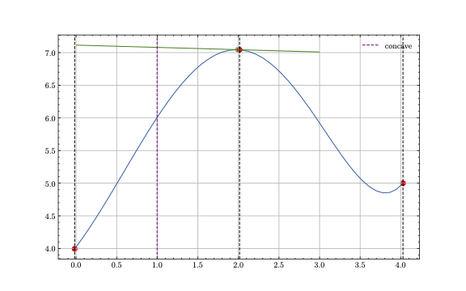

Data Generation
In order to create process curves with a realistic behaviour of process drifts, driftbench
synthesizes curves by solving nonlinear optimization problems. By defining a function \(f(w(t), t)\)
and support points \(x\) and \(y\), we can solve for the internal parameters \(w(t)\) such that
all the conditions given by the support points are satisfied. The schema is explained in
the following section.

Synthetization
In the first step, we need to define latent information which encodes the shape of the curves
to synthesize. This is done by formulating such a spec in a yaml-file.
For example, the following spec defines a polynomial of 7-th degree:
example:
N: 10000
dimensions: 100
x_scale: 0.2
y_scale: 0.2
func: w[7]* x**7 + w[6]* x**6 + w[5]* x**5 +w[4]* x**4 + w[3] * x**3 + w[2] * x**2 + w[1] * x + w[0]
w_init: np.zeros(8)
latent_information:
!LatentInformation
x0: [0, 1, 3, 2, 4]
y0: [0, 4, 7, 5, 0]
x1: [1, 3]
y1: [0, 0]
x2: [1]
y2: [0]
drifts:
!DriftSequence
- !LinearDrift
start: 1000
end: 1100
feature: y0
dimension: 2
m: 0.002
example.
The other keys of this yaml structure are:
N: The number of curves to synthesize.dimensions: The number of timesteps one curve consists of.x_scale: The scale of a random gaussian noise which is applied to thex-latent information. If set to 0, no scale noise is applied.y_scale: The scale of a random gaussian noise which is applied to they-latent information. If set to 0, no scale noise is applied.func: The function which defines the shape of a curve. The internal parameters are denoted asw, while the timesteps which are used to evaluate the curve are denoted asx.w_init: The initial guess for the internal parameters. Must match the number of internal parameters defined infunc.latent_information: Contains aLatentInformationstructure, which holds the latent information which defines the support points of the curves. Thex_idenote thex-information for thei-th derivative offunc, while they_idenote they-information respectively.drifts: Contains aDriftSequencestructure, which in turn holds a list of drifts, for exampleLinearDrift-structures. These drifts are applied in the specified manner on the latent information for each timestep defined asstartasendwithin theNcurves. The drift structure defines thefeatureand thedimensionas well as internal parameters, like in this case the slopem.
After setting up such a specification, you can call the sample_curves-function, and retrieve the
coefficients, respective latent information and curve for each timestep.
measurement_scale some gaussian noise with the specified scale is applied
on each value for every curve. By default, \(5\%\) of the mean of the curves is used. If you want to
omit the scale, set it to 0.0 explicitly.